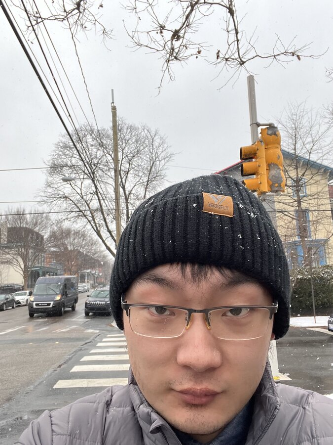
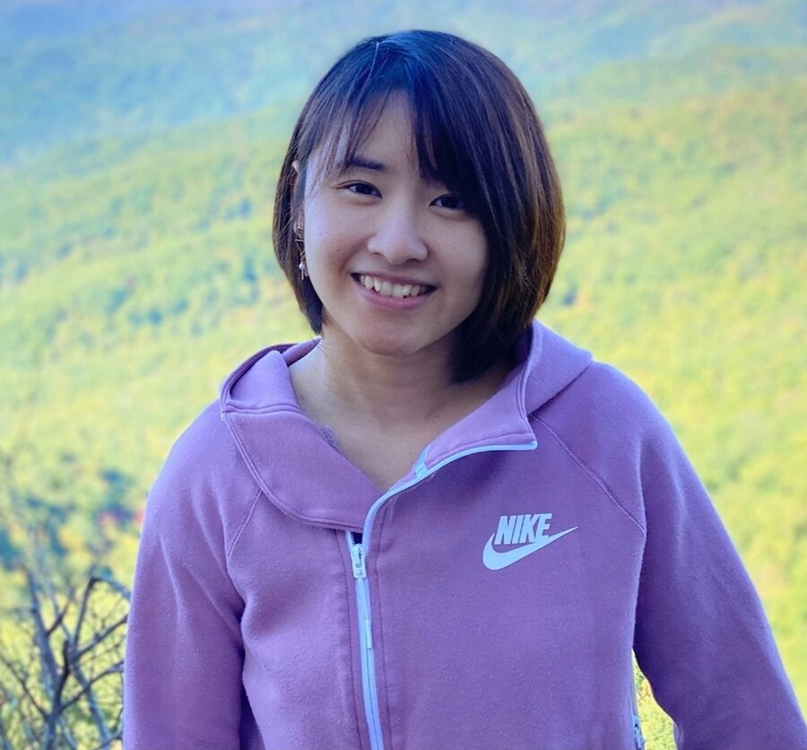
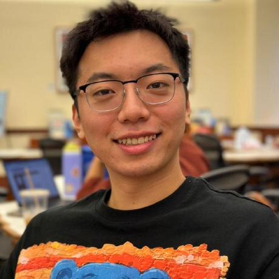

Foundational Models & Work
Modeling real-world jobs, skills, and emerging human–AI workflows.
December 2026 IEEE BigData Workshop
Human Labor vs. AI Automation:
Zero-Sum or Positive-Sum?
A multidisciplinary forum on designing AI that expands human capability, dignity, and opportunity rather than treating automation and labor as inevitable competitors.
About the workshop
AI4Workforce brings together machine learning, economics, public policy, human-computer interaction, and industry to examine the feedback loops between AI development and labor markets.
We move beyond a simple replacement narrative. The workshop asks how jobs can be decomposed into tasks, where augmentation creates value, which capabilities remain distinctly human, and what technical and governance choices can steer AI toward equitable, positive-sum outcomes.
Modeling real-world jobs, skills, and emerging human–AI workflows.
Identifying tasks best suited to automation, delegation, or collaboration.
Hiring, evaluation, algorithmic management, fairness, wages, and mobility.
Building copilots, reskilling pathways, and dignity-preserving systems.
Governance, inequality, oversight, institutional change, and systemic risk.
In person in Phoenix
All invited speakers will join us in person. Talk titles and abstracts will be announced with the final program.
Co-founder & CEO, hireEZ
Steven leads hireEZ, an AI-driven talent acquisition platform, and works toward a future where intelligent systems create faster, fairer connections between people and opportunity.
Official profileAssociate Professor, The Chinese University of Hong Kong
Yu researches efficient and sparse architectures, model compression, and multimodal learning, with experience translating foundation-model research into deployed AI systems.
Official profileAssistant Professor, UNC–Chapel Hill
Jingping directs UNC’s Networked Intelligence & Cyber-Embedded Systems Lab. Her research spans human-centric wearable devices, embedded AI, cyber-physical systems, and AIoT platforms for health and well-being.
Official profileCall for papers
We welcome technical, empirical, and interdisciplinary work on AI’s changing relationship with labor and the design of positive-sum futures.
Up to five pages, excluding references and supplementary material. We welcome original unpublished work as well as work currently under review elsewhere.
Up to two pages for works in progress, intermediate milestones, conceptual contributions, and promising directions from early-career or resource-limited researchers.
Submissions will use double-blind review. Formatting instructions and a template will be posted here.
The submission portal will be linked when it becomes available.
Each submission will be reviewed by at least three reviewers, with conflicts checked and managed.
Accepted papers will be presented as posters; selected papers from both tracks may receive oral slots.
Submission portal
The portal, template, anonymity details, and final dual-submission policy will be announced.
Best Student Paper Award
Awarded to an outstanding student-led or student-co-led contribution.
Important dates
All deadlines will use Anywhere on Earth (AoE) unless announced otherwise.
Paper submission
To be announcedAuthor notification
To be announcedCamera-ready deadline
To be announcedIEEE BigData 2026
December 14–17, 2026Exact workshop day
To be announcedTentative program
The final schedule and talk titles will be published after paper decisions. Times below are provisional.
Workshop team
Our organizers span computer science, communication, business, agriculture, and industry research.
Workshop Chair
Assistant Professor of Computer Science
University of North Carolina at Chapel Hill
Tianlong works on accurate, trustworthy, and efficient machine learning systems. He leads the workshop’s scientific program and organizing committee.
Organizing committee

UNC–Chapel Hill
hireEZ

UNC–Chapel Hill
UT Austin
University of Maryland
Cornell University
Microsoft Research
Cisco Research
Stevens Institute of Technology
Student organizers

UNC–Chapel Hill
UNC–Chapel Hill
Program committee
Program committee invitations are in progress. The full committee will be announced as reviewers confirm their participation.
University of North Carolina at Chapel Hill
Accepted papers
Paper titles, authors, presentation assignments, and poster materials will be published following the review process.
Contact
For submissions, participation, accessibility, or program questions, contact the workshop team.